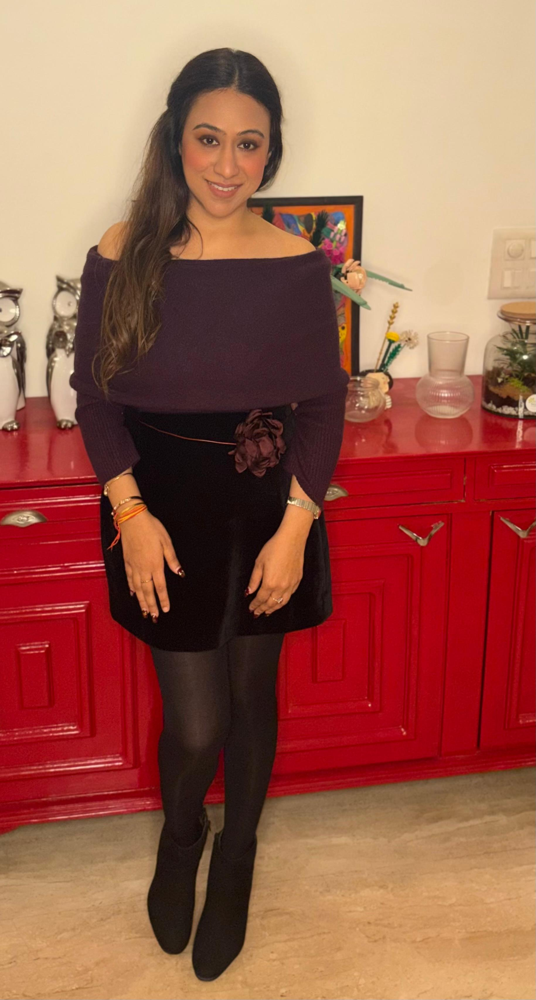

Anisha Khanduja
Contemporary Artist · Painter · Printmaker

Hi, I am Anisha Khanduja
I am Anisha Khanduja, a contemporary artist based in New Delhi, India. Born and brought up in Dehradun, Uttarakhand, I spent my formative years in a place where life seemed to move at a gentler pace. My first studio was in Dehradun, where I began developing my practice and discovering the subjects, forms and ideas that continue to find their way into my work.
Growing up there shaped my relationship with nature and, perhaps more importantly, taught me to notice the small things. A little plant finding its way through a crack in a wall, birds gathering on a rooftop, animals going about their day, or the unexpected beauty of an ordinary corner, these moments have a quiet way of making life feel fuller. They remind me that joy does not always arrive through grand gestures; sometimes, it is already present in the things we almost overlook.
This sensibility finds its way into my art through playful compositions, vibrant colours, architectural forms and familiar objects that take on unexpected relationships. My work moves between the tangible and the imagined, the playful and the contemplative. I am interested in how simple forms, symbols and spaces can hold different meanings, and how an artwork can invite us to pause, look again and experience a familiar world differently.
 Marking The Fish · Acrylic on Paper
Marking The Fish · Acrylic on Paper
Painting
Painting allows me to build and rearrange visual worlds. I bring together objects, architectural fragments, geometric forms, patterns and symbols, exploring the possibilities that emerge when these elements meet. Colour is central to this process, not merely as a way of describing what I see, but as a means of creating atmosphere, rhythm and emotion. I enjoy how colour brings joy, happiness and love.
I enjoy the tension between structure and spontaneity, recognition and ambiguity. A space might feel familiar yet impossible; an ordinary object might become a character in its own story. Through these playful shifts, I hope to create works that evoke joy, warmth, curiosity and a sense of discovery, while leaving room for reflection and personal interpretation.
 Ordinary Objects 1 · Linocut on Paper
Ordinary Objects 1 · Linocut on Paper
 Circle · Cyanotype Sun Print
Circle · Cyanotype Sun Print
Printmaking
Printmaking is an integral part of my artistic practice, offering me different ways to explore images, forms, patterns and the world around me. Working across techniques such as linocut and cyanotype, I am drawn to the distinct possibilities each process offers, from the deliberate act of carving into a surface to the interplay of light, objects and silhouettes.
My printmaking practice moves across different subjects and ideas. In my Ordinary Objects series, I turn my attention to familiar things that occupy our homes, often overlooked simply because they have always been there. I explore these objects through compositions that map the small, intimate spaces within the larger environment of a home, reflecting on familiarity, belonging and the pleasure of noticing what might otherwise go unseen.
Alongside this, I explore other subjects and visual possibilities through printmaking, allowing each series to develop its own language. I value the tactile, hands-on nature of the process and the relationship between intention and chance, how an image evolves through making, and how each technique brings its own character to the final work. Printmaking offers a different rhythm to my practice: one that is tactile, deliberate and deeply connected to the act of making by hand. Each image moves through drawing, carving, inking and printing, with the physical process leaving its traces in the finished work.
I am drawn to the relationship between repetition and difference, the way an image can be reproduced while each impression retains its own material presence. The textures, marks and small variations that emerge through this process are as important to me as the image itself.
In cyanotype, light becomes both a maker and a storyteller, leaving behind traces of forms, shadows and fleeting encounters. Drawn to the poetry of chance and transformation, I explore how these impressions emerge in blue, holding a quiet interplay between presence and absence, what is revealed and what remains unseen.
A note on place, nature and Shiva
My connection with Uttarakhand extends beyond its landscape. The region’s deep spiritual traditions and its association with Shiva have also informed my artistic journey. It was in Dehradun that I began my Shiva series, a body of work that grew from this personal connection with place and its cultural and spiritual imagination.
Uttarakhand, with sacred sites such as Kedarnath and its long-standing Shaiva traditions, carries a powerful cultural association with Shiva. For me, this connection offers a way to explore symbolism, presence and the relationship between the tangible and the unseen. The Shiva series is part of my continuing exploration of how familiar symbols can be reimagined through my own visual language. It started as a series of painting bright colorful canvas and then it has moved to printmaking, reducing the shiva symbols to the most simple forms and carving them again and again just like meditation and chanting.
In the studio
Whether I am painting or making a print, I return to the same instinct: to look closely, to notice what might otherwise be missed, and to discover new possibilities in familiar forms. My work brings together the architectural and the organic, the colourful and the contemplative, the carefully constructed and the unexpectedly playful.
Ultimately, I want my art to evoke joy, happiness and love, to offer a moment of pause, a spark of curiosity, or simply the pleasure of looking. If a painting or print can remind someone of a small wonder they once noticed, bring warmth to a room, or reveal something new each time they return to it, then it has become part of the everyday life I hope my work can celebrate.
How a Work Comes to Life
Six deliberate, tactile stages behind every creation.
Imagine & Sketch
Every piece begins as an idea. I explore it on paper, working out the composition, the mood, and the small details I want to hold on to. By the time I begin the real work, I know where I’m headed.
Plan & Prepare
I choose the surface, the materials, and the palette that best suit the idea, then set up my space. I take my time here, because a thoughtful start makes everything after it feel steadier.
Explore & Experiment
Before committing, I test colours, textures, and techniques until something feels right. This is where the piece starts to find its own voice.
Make & Build
This is the heart of it. I work slowly and with full attention, building the piece up layer by layer, from broad shapes to the finest details. Every mark is intentional.
Pause & Let It Settle
When the making is done, I step back and give the work time to rest, dry, or cure, whatever it needs. Patience here protects the piece and helps it last.
Refine, Sign & Share
I look over the finished work in natural light, make any last touches, and sign it by hand. Then I package it with care, ready to find its place in someone’s home.
Collect My Work
I invite you to explore my original paintings and handmade print editions. You can also get in touch to enquire about an artwork, discuss a commission, or arrange a visit to my studio in New Delhi.
Follow Us on Instagram: @printed.painted_


Join @printed.painted_ on Instagram for behind-the-scenes carve timelapses, new edition announcements, and direct studio messaging.